Web Development Project Report
Problem Description
The website will serve as an interactive hub for learning, research and career information about the present writer. The website will provide content such as a portfolio for work such as software development and photography, blog articles, links to social media profiles such as GitHub, Twitter, Instagram etc…, a means to quickly contact the present writer and an online Curriculum Vitae.
The archetypical users of the site will be students or any individual who wants to learn and employers who are looking for more details on the present writer.
The site aims to solve the problem of gathering all the present writer’s portfolio, resume and social media profiles and link them all to one place, the site will act as a one-stop destination to the previously listed medias.
Research
In this section of the report, 3 websites which were picked under the same problem description that was stated in the previous section will be analysed. For each of the website, the site layout and site content will be analysed. The analysis will then be used to advise the layout of the website that will be built.
First website
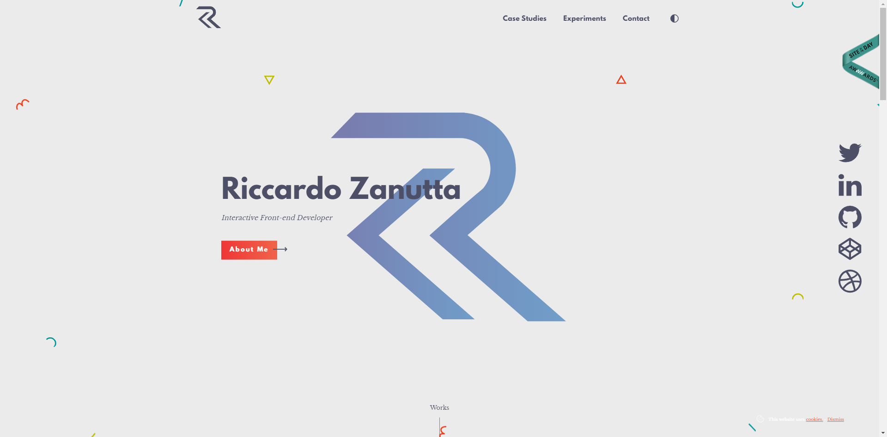The first website that will be analysed is http://riccardozanutta.com/ which is a portfolio website for Riccardo Zanutta who is a freelance front-end developer. The website layout has a single column layout where the content is laid out one after another vertically, the user is greeted with a full-page header section and the navigation is located at the top.
Content wise, the three main topics on the website which are “Case Studies” where it contains his recent works, “Experiments”, “Contacts” and “About me” are all kept on the homepage and clicking on the navigation either scrolls the page down to the content or pops up content. In the “Case Studies” section, the user is greeted with several cards which can be clicked on. Clicking on these cards direct the user to a new page which contain details of one of his works.
Second website
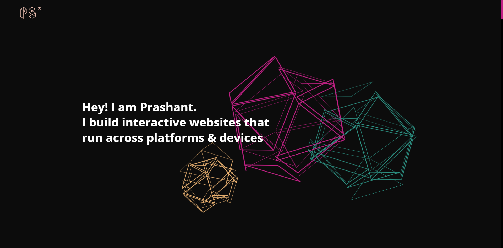The second website is https://prashantsani.com/ which is a portfolio website for Prashant Sani who is a front-end web developer. The website uses a mobile first with a single column layout. The site navigation is opened by a button and a full-page navigation appears.
The website contains all its content on the homepage, the site has topics such as “Projects” where all their work is listed and clicking on them directs the user to a page describing the details of one of their work, “About” where they give a brief description of themselves and they include a link to their CV, “Training” where they describe their service in training individuals, “Experiments” where they showcase their CodePens and “Contact” which allow the user to send Prashant an email.
Third website
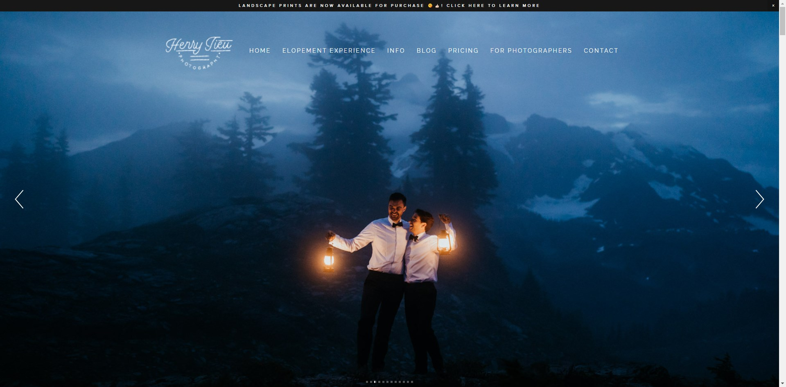The third website is https://www.henry-tieu.com which is a portfolio website for Henry Tieu who is an Adventure Elopement and Intimate Wedding photographer. The layout of the website on large screens consists of many layout types, the user is first greeted with a hero image, then the rest of the website consists of split layout where there is text content on one side and an image on the other side, a single column layout or grid layout for their articles.
The website contains content over several pages, a navigation bar at the top of the page allows the users to access the different pages. The homepage contains a link to the contacts page, a taster on what an elopement is, an introduction to the photographers, links to different blogs and pictures showing their work throughout the page. The website contains categories of pages such as “Elopement Experience”, “Info” such as “About us”, “FAQs”, etc…, “Blogs”, “Pricing”, “For Photographers” which has pages of resources which help educate and enable other photographers to get a start in elopement photography, and the “Contacts” page where users can send in enquiries or bookings.
Technology Selection and Site Architecture
The website will be developed using HTML 5 to implement the site structure and content with semantic tags, CSS 3 to set a layout and style the HTML document and JavaScript to implement site functionality.
The site will have a homepage which the user will first see, from there the user can access the other pages. When the user visits the website on a large screen, for example on a 1920x1080 pixel resolution screen, the content will be mainly restricted to a width such as 1200px. Text content will be displayed left aligned, images can be either be incorporated within text content or within a gallery grid. Links to articles will be displayed in the form of a card in a scrolling grid. When the user visits the website on a small screen, for example on a 411x731 pixel resolutions screen, text content and images will be displayed on a single column. Images in a gallery will be displayed in a single column and same for article cards.
When developing for Cross Browser Compatibility, the website will be tested against the 4 common browsers like Chrome, Safari, Firefox and Edge between different devices. Any unintended behaviours that appear will be fixed before any further changes are made.
JavaScript Functionality
On the website there will be several JavaScript (JS) functionalities. The first JS functionality controls a lightbox which allows the user to open an image from a gallery and display it separately from other content, the use will also be able to click to the next or previous image. The second JS functionality control the opening and closing of the navigation bar on a small screen e.g., a mobile phone. The third functionality will animate reveals to elements as they load in such as text or images. The fourth JS functionality will be to transition between HTML pages. The fifth JS functionality will be to hide the navigation bar when the user scrolls down on a large screen e.g., on a desktop screen.
There will be several JavaScript (JS) functionalities included on the website. This will make for a more user interactable website.
First function
The first JS functionality controls the primary navigation bar. Both desktop and mobile navigation will have different functions controlling it. When viewing the site on desktop, as you scroll down the page, the navigation bar hides itself, then when you scroll back up it reappears.
Second Function
The second JS functionality controls any gallery carousels that have been implemented on the website. The user can click the previous or next buttons to cycle through the gallery. Alternatively, the user can click on any of the images in the row displayed below the carousel which will be displayed on the carousel image.
Third Function
The third JS functionality allows for the validation of any form fields such as the contacts form. When the user submits the form, the script will pull the contents of the field and the classes from the fields. The fields are then validated depending on the conditions of each field. If the field is required, then the script will check if the user has entered their input. If the field needs a certain format, then the script will test the contents of the field against a Regular Expression. If either of these returns false, then the form is not valid and will not be sent and feedback to the user is given of which field is invalid and why it is invalid. When the form passes validation, then the details are allowed to be sent and feedback to the user is given for the successful submission.
Fourth function
The fourth JS functionality controls elements which can expand and collapse. The script toggle a class tag on the element which tell the element whether to be expanded or collapsed.
Low Fidelity Prototype
A wireframe illustration made in Adobe Illustrator. This wireframe illustration will aid in the layout of the content on each page of the website.
The website layout and content will be created using Nielsen’s 10 Heuristics for User Interface Design which is shown below, however, we wont be able to demonstrate some of these within some wireframe illustrations.
- Visibility of System Status
- Match between systems and the real world
- User control and freedom
- Consistency and standards
- Error prevention
- Recognition rather than recall
- Flexibility and efficiency of use
- Aesthetic and minimalist design
- Help users recognize, diagnose, and recover from errors
- Help and documentation
Development Plan
The website will be developed using a code editor called Visual Studio Code. The website will be placed in a folder called “Adrian Capacite”, within the folder the website will be structured as shown in Figure1
The website pages will be developed using a code editor called Visual Studio Code (VSC). VSC is a very powerful code editor as it includes syntax highlighting, IntelliSense (smart autocomplete) and other helpful tools. VSC will help with developing the website from the website root folder.
The website will be contained in the folder “Adrian-Capacite”, here the files will be structured as follows:

Figure: File hierarchy, “[folder] > [file type]” means the folder contains the file type
A CSS file called style.css will be used to contain the main styles such as the main element styles, utility styles, grid and flexbox utility styles, text utility styles, other simple styles and more. Another file is called content-styles.css for more special styles for containers such as card grid containers, image carousels and more.
Both style.css and content-style.css are stored in the directory “/assets/css”, these .css files are then linked in the
tag in a tag in every .html document. Linking the .css files in a .html document allows elements to be styled.Styles in both of these .css files are reused all throughout the website, for example, .accent-line which places a line underneath any element with the class, this is used as an accent for elements such as h1 in articles or the h2 in the about page. Another example is the .card style, this is used to style elements into a card which typically get placed into a card scrolling wrapper or card grid wrapper and is used in different pages of the website.
Testing Plan
To ensure that the website is cross-browser compatible, a testing plan will need to be followed through. To test the website, we will be using tools like a HTML and CSS validator and different browsers in different screen form factors.
Validation
To ensure the .html and .css files are valid, these files put through a validator site. The site https://validator.w3.org/ will be used to validate HTML and https://jigsaw.w3.org/css-validator/ will be used to validated CSS.
Responsive design
Responsive design is used on this website, to test for good responsive design, we will use a suite of browsers at different sizes by resizing the browser window or using the responsive design tool. The browsers that will test the responsive design of the website are Google Chrome, Firefox and Microsoft Edge, on a laptop screen of 1920x1080p will test all browsers with their responsive layout tool, whereas on a phone screen of 1080x1920p will test Google Chrome and Firefox.
Google Chrome
Large Screen
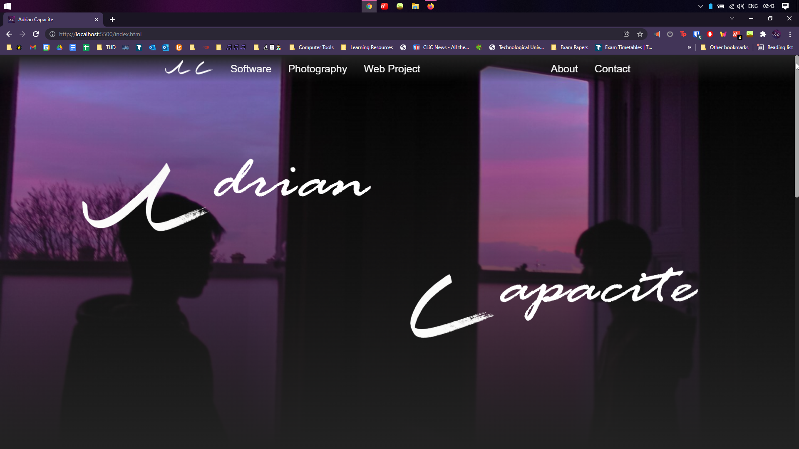Small Screen
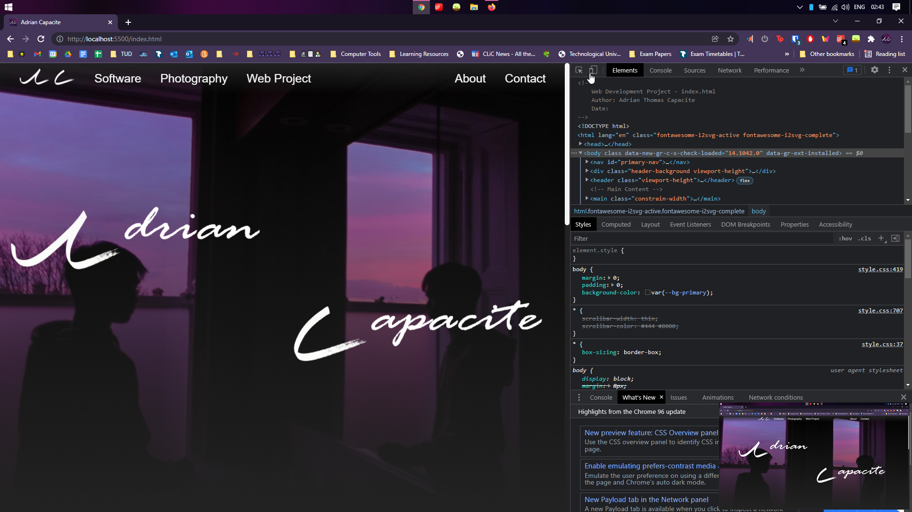Mobile Screen
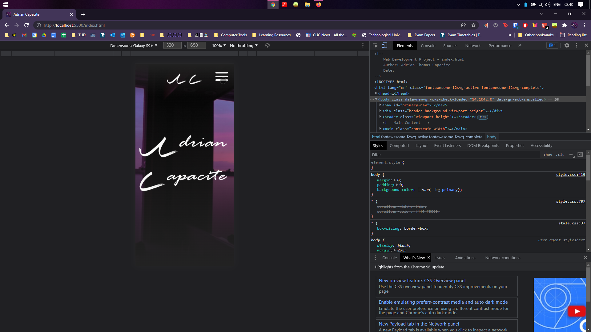Mobile Screen Nav Open
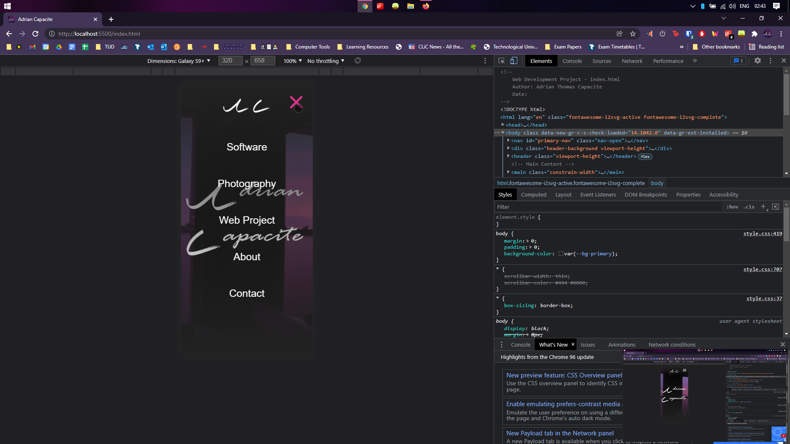Firefox
Large Screen
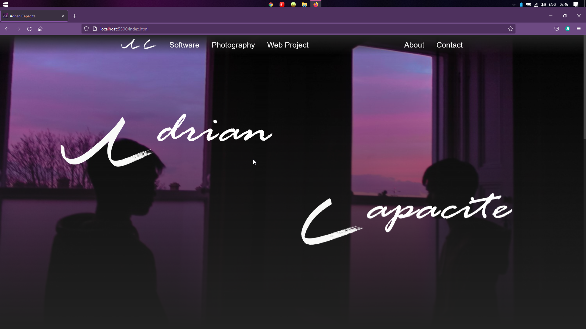Small Screen
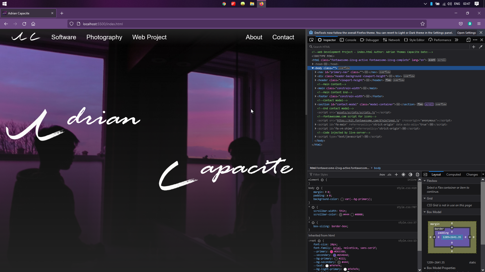Mobile Screen
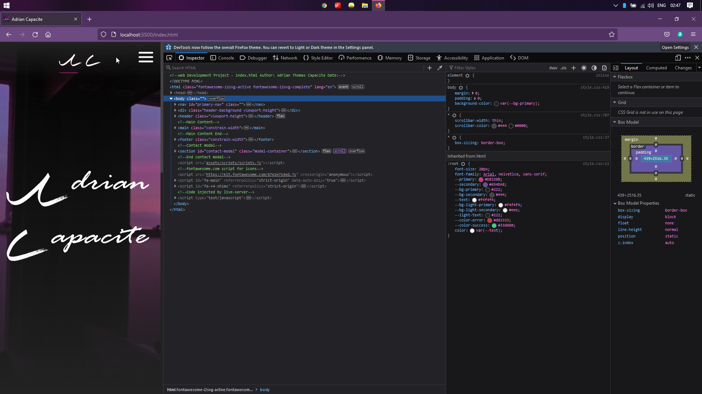Mobile Screen Nav Open
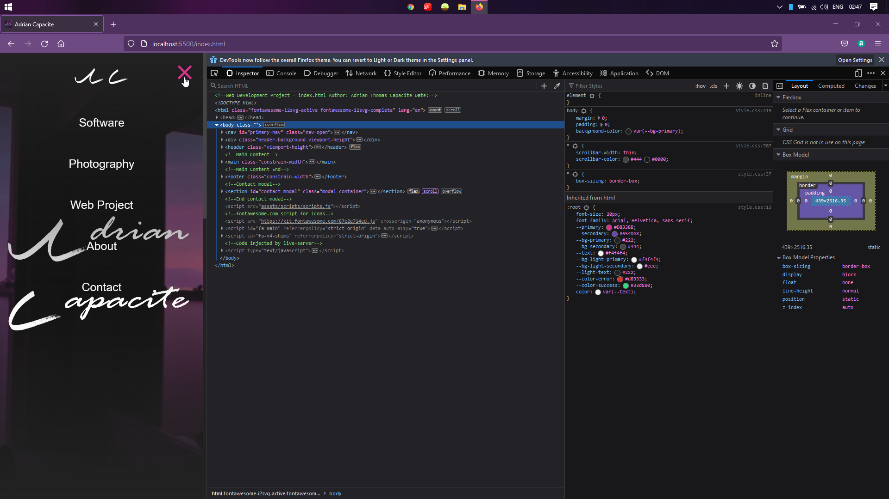Edge
Large Screen

Small Screen

Mobile Screen

Mobile Screen Nav Open

Site Evaluation
After the website has been developed, website the Nielsen’s 10 Heuristics for User Interface Design which was mention in the Low Fidelity Prototype
- Visibility of System Status
- Match between systems and the real world
- User control and freedom
- Consistency and standards
- Error prevention
- Recognition rather than recall
- Flexibility and efficiency of use
- Aesthetic and minimalist design
- Help users recognize, diagnose, and recover from errors
- Help and documentation
Appendix
Weekly Logs
Week 1 - 11 / 11 / 21
This week is the first week on developing my project website. Potential ideas I have for the website is:
- Completely improve and remake my personal website with a new design and cleaner code.
- A help website for computer science.
- A website about SpaceX, a space rocket company.
I will be going for the last option, a website about SpaceX, a space rocket company, the achievements, their aspirations and services
Week 2 - 18 / 11 / 21
This is the second week developing my project website. I have decided to change my ideas for my website to be my personal website.
Here in my website, it will contain an introduction of myself, a blog page, a portfolio of my work and hobbies such as photography and software development and an online CV with a means to reach me.
I will be developing my website using HTML 5, CSS 3 and JavaScript. I will be developing my website in Visual Studio Code.
My website layout will be created primarily using the CSS grids display property.
Week 3 - 25 / 11 / 21
This is the third week of developing my project website. I have begun brainstorming and planning the content that will be included on the website. At the same time, I have also made some research on sites like my website which were software development and photography portfolio websites.
I have also begun to write up the report for the website.
Week 4 - 2/ 12 / 21
This is the fourth week of developing my website. I have finalised research on sites like my website. Using a combination of inspiration and my own ideas I have written what web development tools I will use, how I will make my website responsive and how I will test my websites across different browsers, devices and screens. I have planned out the JavaScript functionality I will use on the website for example opening a mobile navigation menu. I have finished drawing up the wireframe of the website.
Week 5 - 9/ 12 / 21
This is the fifth week of developing the website. I have begun implementing the website in HTML and CSS, the main structure of the homepage were implement and so as the styling.
Week 6 - 18 / 12 / 21
This is the sixth and final week of developing the website. I have finished implementing the website, afterwards I performed testing on the site to see if the code is valid and the responsive design is working as intended. I have also finalised the report for the web development assignment and checked if all the tasks have been done according to the assignment brief.